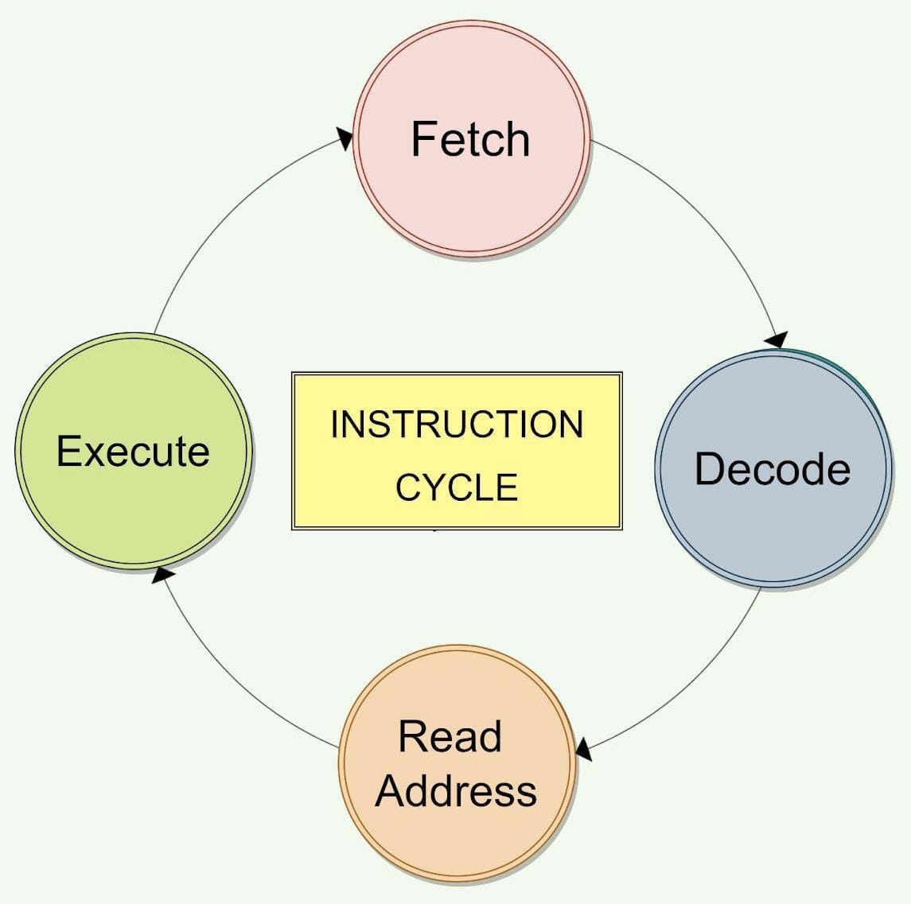

The Program Counter (PC) points to the address of the next instruction.
The instruction is fetched from memory and placed in the Memory Buffer Register (MBR).
Decode
The instruction in the IR is decoded by the Control Unit (CU).
The CU determines what action needs to be performed (e.g., arithmetic operation, memory access, jump).
Fetch Operad
If the instruction requires operands (data), the addresses of the operands are sent to the Memory Address Register (MAR) to fetch them from memory.
The operands are loaded into the appropriate registers or memory.
Execute
The Arithmetic Logic Unit (ALU) performs the specified operation (e.g., addition, subtraction, logical operations).
The result of the operation is generated.
Write-Back
The result from the ALU is written back to the destination register or memory location, as needed.

Processor Design
Problem Statement: Design a 16-bit processor with 1 address format and having direct addressing mode.
Processor Type: A 16-bit processor capable of handling 16-bit wide instructions and data.
Designed with a 1-address instruction format and operates in direct addressing mode.
Instruction Format:The 16-bit instruction is divided into:
8-bit Opcode: Specifies the operation (e.g., LOAD, STORE, ADD).
8-bit Address: Directly specifies the memory location of the operand.
Direct Addressing Mode:
The operand is stored at a specific address in RAM.
The address field in the instruction points directly to this location.
Core Components:ROM:Stores the program instructions.
RAM: Stores operands and results during execution.
Control Signals:Includes signals like LD (load), STR (store), CLR (clear), and others to manage data movement and execution.
Arithmetic Logic Unit
ALU: A 16-bit ALU designed with logic operators, arithmetic operators, and shift operators performs essential computations on 16-bit binary data. Here’s how it functions based on the specified operators:
Logic Operators: Perform bitwise operations (AND, OR, XOR, and NOT) directly on the 16-bit inputs to manipulate individual bits for logical decision-making.
Arithmetic Operators: Carry out basic arithmetic operations like addition and subtraction, processing 16-bit numbers. These operations support carry and borrow for multi-bit calculations.
Shift Operators: Include left and right shifts, which reposition bits in the 16-bit data. These are often used for multiplication, division, or data alignment.
Operation Selection: The ALU uses control signals to choose between logic, arithmetic, or shift operations based on the current instruction.
Output: Produces a 16-bit result along with status flags like Zero (Z) and Carry (C), indicating operation success or overflow conditions.
Program Counter
Purpose: The program counter holds the address of the next instruction to be executed in a program, ensuring sequential execution of instructions.
Incremental Functionality: After each instruction fetch, the PC is automatically incremented to point to the next memory location containing the subsequent instruction.
Branching and Jumping: During branch or jump instructions, the PC is updated with a new address, enabling non-sequential execution of instructions.
Size: The size of the PC depends on the processor architecture. For example, a 16-bit processor has a 16-bit PC, allowing it to address up to 216=65,5362^{16} = 65,536216=65,536 memory locations.
Control Signal: The PC operates under control signals that direct its actions, such as increment, load, or reset, based on the instruction flow.
Control Unit
Purpose: The Control Unit (CU) is the component of the processor responsible for directing the operation of the CPU by generating control signals to coordinate all components.
Instruction Decoding: It decodes the fetched instructions from memory and determines the sequence of operations to execute the instruction.
Control Signals: Generates control signals for various processor components (e.g., ALU, registers, memory, I/O) to perform operations like data transfer, arithmetic, logic, and branching.
Microprogrammed Control Unit: Uses a microinstruction set stored in memory to generate control signals, offering flexibility for complex instruction sets.
Role in Clock Cycles: Synchronizes all operations with the system clock, ensuring correct timing for each step in the instruction cycle (fetch, decode, execute
Final Circuit
Learning Outcomes
Trade-off Between Operand Fields and Instruction Length: I learned how to balance the size of the opcode, operand fields, and immediate values to ensure that the instruction format remains efficient, given the 8-bit constraint. This includes the challenge of fitting operands and operations within a limited bit space.
Handling Immediate Addressing Mode: I gained an understanding of how immediate addressing mode simplifies memory access by directly embedding operands into the instruction. This helps in reducing memory fetch cycles and makes instructions faster.
ALU Flexibility: I learned the importance of designing an ALU that can process both register-based and immediate operands. This required understanding how to integrate different data sources into the ALU without increasing its complexity too much.
Control Unit Complexity: The process of designing the control unit helped me understand how complex it can be to manage different types of instructions (those involving registers and immediate values) and generate control signals to execute those operations properly.